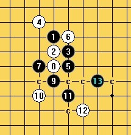
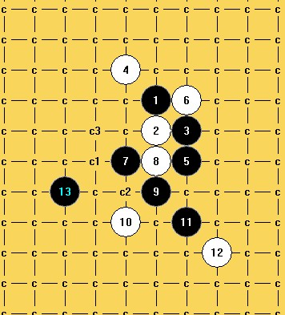
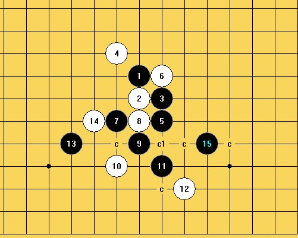
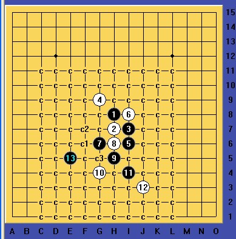
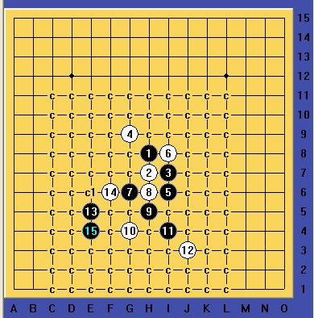
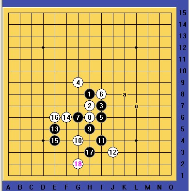

闲逛时看到一个问题，黑如何必胜呢？
#1 闲逛时看到一个问题，黑如何必胜呢？ 作者：逆刃 发表时间：2012-4-15 20:49:55
这样一个局面，当时图片没有具体顺序，形似花月和溪月的走法，一看下成这样，肯定是哪一步定式出错了。那么现在的局面还能够必胜吗？拆解后发现还是可以的。有兴趣的朋友可以试试看。难度中等，主要是能寻找到具体的进攻线路，然后就比较简单了。
［ 空恨社小仙 于 2012-4-15 21:24:15 时花20金币送鲜花一朵］
#2 Re:逆刃【==闲逛时看到一个问题，黑如何必胜呢？==】 作者：空恨社小仙 发表时间：2012-4-15 21:20:45
#3 Re:逆刃【==闲逛时看到一个问题，黑如何必胜呢？==】 作者：空恨社小仙 发表时间：2012-4-15 21:24:10
 000.rar
000.rar
［ 逆刃 于 2012-4-15 21:55:27 时奖励此帖[金币加 100 威望加1］
［ 小小亦默 于 2012-4-15 22:05:00 时花20金币送鲜花一朵］
［ 小红眼镜 于 2012-4-16 1:03:06 时奖励此帖[金币加 100 威望加1］
#4 Re:闲逛时看到一个问题，黑如何必胜呢？ 作者：自来水 发表时间：2012-4-15 21:33:23
预计原正确路线
［ 空恨社小仙 于 2012-4-15 21:39:25 时花20金币送鲜花一朵］
#5 Re:闲逛时看到一个问题，黑如何必胜呢？ 作者：逆刃 发表时间：2012-4-15 21:52:05
3L十分强大，可惜我没有想到那个非常巧妙的15~。我用的是另外一种杀法。［ 空恨社小仙 于 2012-4-16 0:32:55 时花20金币送鲜花一朵］
#6 Re:闲逛时看到一个问题，黑如何必胜呢？ 作者：自来水 发表时间：2012-4-15 22:05:29
 我们都够用了，你那套还不快奉献出来
我们都够用了，你那套还不快奉献出来
#7 Re:闲逛时看到一个问题，黑如何必胜呢？ 作者：逆刃 发表时间：2012-4-15 22:10:30
［ 小红眼镜 于 2012-4-16 1:02:51 时奖励此帖[金币加 100 威望加1］
#8 Re:闲逛时看到一个问题，黑如何必胜呢？ 作者：山城刀客 发表时间：2012-4-15 23:03:50

我走了弯路，杀法复杂，思路偏了。
［ 空恨社小仙 于 2012-4-16 0:48:34 时花20金币送鲜花一朵］
#9 Re:闲逛时看到一个问题，黑如何必胜呢？ 作者：逆刃 发表时间：2012-4-15 23:40:17
LS也可以把方法分享出来啊，尤其是c1点的取胜，感觉应该是比较精彩的吧！#10 Re:闲逛时看到一个问题，黑如何必胜呢？ 作者：山城刀客 发表时间：2012-4-16 1:12:48
惭愧呀，后面和三楼的杀法一样，左边实在没做出杀来！
［ 空恨社小仙 于 2012-4-16 1:25:11 时花20金币送鲜花一朵］
#11 Re:山城刀客【==Re:闲逛时看到一个问题，黑如何必胜呢？==】 作者：空恨社小仙 发表时间：2012-4-16 1:27:27
能杀就行... 各显神通,走点弯路算啥,无边苦海,回头就是岸,万流归大海.

［ 山城刀客 于 2012-4-16 5:38:44 时花20金币送鲜花一朵］
［ 山城刀客 于 2012-4-16 5:39:48 时花20金币送鲜花一朵］
#12 Re:闲逛时看到一个问题，黑如何必胜呢？ 作者：山城刀客 发表时间：2012-4-16 5:30:55

这道题真是充满了玄机，细拆后又发现一套杀。

关键是C1点有难度。

借助17绕到右边，两路杀。（另外，其他的19均不好杀出，比如K5，K6等点）
棋谱：
2.rar
［此帖子已被 山城刀客 在 2012-4-16 5:34:41 编辑过］
［ 逆刃 于 2012-4-16 8:36:08 时奖励此帖[金币加 100 威望加1］
#13 Re:闲逛时看到一个问题，黑如何必胜呢？ 作者：逆刃 发表时间：2012-4-16 8:43:58
LS的这路杀，15,17手都非常精彩，很好的联系到了右边，17手堪称连接好棋，18防上正好能杀，这个19手的做杀也非常巧妙，刚看了下是个长达8手的VCF；如18防下，则可以在右边发展！整个进攻组织非常犀利！